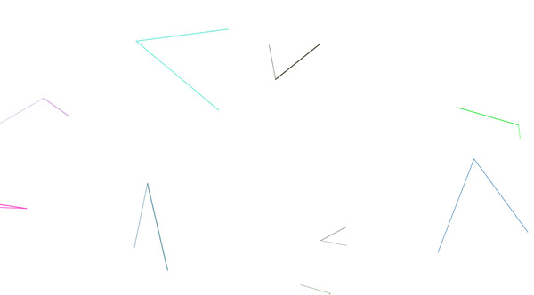

Lee Tusman
↩ Everyday
<
>
Title: Ron
Year: 2024
Medium: Drawing Software
URL: Ron↩
Description:
A tribute to Harold Cohen's AARON software, the first modern generative algorithmic drawing software and hardware. I've watched recorded interviews (thanks Jeffrey!) and read Harold's writing over the years, but this is the first time I've seen the work in person. An exhbit of the work of AARON was in a posthumous solo show at the Whitney Museum and displayed paintings, software, and plotters along with flyers and sketches and notebooks from Harold Cohen. I particularly liked learning of some of the earliest iterations of Harold running in BASIC, though they were ported to Python for the current exhibit version. Inspired by this work I made a series of minimal drawing scripts.

 ©opyleft
©opyleft